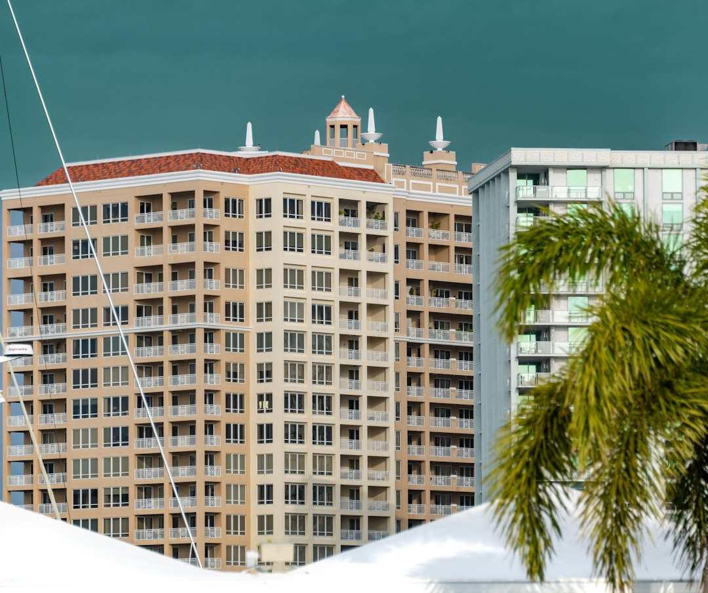

For Sarasota homeowners, the published guide gives asphalt shingle replacement as an indicative market guide of $4.50 to $8.00 per square foot, with tile and metal typically higher. A firm price still depends on roof size, pitch, material, decking and flashing condition after inspection. The practical next step is to separate urgent leak control from permanent repair or replacement, then request a written scope tied to Florida Building Code high wind requirements.
For homeowners comparing roofing contractors sarasota options, the useful question is who can inspect the roof, explain the damage, and put the right scope in writing.
Roofing Contractors Sarasota Explained
Roofing Company Sarasota presents the first decision as inspection led: repair or replace should follow what is found on the roof. That is a useful filter for a leak after weather, visible storm damage, cracked tile, missing shingles, worn flashing, or an older roof that may be nearing replacement.
Write down what changed before seeking a quote: the room showing water, the roof side exposed to storm driven rain, whether the affected area is pitched or flat, and whether the visible problem is tile, shingle, metal, membrane or flashing. Clear notes help the roofer inspect the right section first.
A narrow repair should name the failed component. A replacement scope should describe more than the finished surface, including decking, underlayment, flashing, ventilation and code compliant installation where those items apply.
Who This Applies To
This guide is for Sarasota and Suncoast homeowners comparing roof advice before approving work. It fits three situations named in the published guide: a fresh leak, storm damage that may require temporary tarping before permanent work, or an ageing roof where repair and replacement both need to be considered.
- Leak inside: ask whether the inspection points to flashing, shingles, tile, decking, ventilation or a membrane section.
- Storm damage: ask what temporary work is needed to reduce water entry and what documentation can support any homeowner's insurance claim.
- Older roof: ask whether repair is still sensible or whether underlayment, decking and final covering now belong in a full scope.
- Inspection need: ask whether the visit can check shingles, flashing, decking and ventilation, and whether it can support a wind mitigation report.
The same decision path helps when reading Sarasota roof repair guidance alongside broader replacement advice.
Match Material To Roof Section
Sarasota homes may combine several roof sections. The source material names asphalt shingle roofs, barrel tile roofs, standing seam metal roofs, metal panel roofs, flat roof membranes over lanais, and low slope areas using TPO, EPDM or modified bitumen. Each section needs its own diagnosis.
Asphalt shingle work should consider ventilation, Florida heat and storm exposure. Tile work may involve concrete or clay tile repair, rebedding or replacement. Metal is presented for homeowners wanting longer service life and strong wind performance under the Florida Building Code. Low slope areas need membrane thinking rather than shingle thinking.
- Which sections are shingle, tile, metal or membrane?
- Is the defect in the covering, flashing, underlayment, decking or ventilation?
- Will any decking or sheathing need replacement before the final covering goes on?
- How will the proposed work meet Florida Building Code high wind requirements?
Cost Questions Before The Quote
The published cost answer gives one specific guide: asphalt shingle replacement in Sarasota is commonly quoted at $4.50 to $8.00 per square foot, while tile and metal are typically higher. It also states that those figures are indicative only. The contractor taking on the job provides a firm written estimate after inspection.
Ask the roofer to separate assumptions from commitments. The written quote should identify roof area, material, repair or tear off method, underlayment, flashing, ventilation items, any decking allowance, permit responsibility if applicable, and exclusions. If an early figure changes after inspection, the revised scope should state what was found.
Scope, price and terms should be set out in writing before work starts. That document is especially important where the first conversation began with storm damage, water entry or a broad replacement estimate.
Licensing And Documentation
The source page points homeowners to verifiable basics: Florida licensed roofing contractors, licence checking at MyFloridaLicense.com before work begins, and Sarasota County roofing that meets Florida Building Code high wind requirements. Keep those checks separate from sales language.
Ask for licence details in a form you can verify, then keep inspection notes, photographs, written scope and insurance related paperwork together. After storm damage, the source material places emergency tarping and leak control before a documented assessment for permanent repair and any claim.
Documentation also matters when replacement is not recommended. A targeted repair for missing shingles, cracked tiles or worn flashing should still say what was inspected, what is being repaired and why wider replacement is not proposed at that stage.
- Record the symptom. Note where water, missing material, cracked tile or visible wear appeared before requesting an inspection.
- Identify the roof section. Ask whether the affected area is shingle, tile, metal or low slope membrane.
- Check the licence. Use the licence details supplied by the contractor and verify them at MyFloridaLicense.com before approving work.
- Separate temporary from permanent. For storm leaks, distinguish emergency tarping or leak control from the later repair or replacement scope.
- Get the scope in writing. Require price, terms, included work and assumptions in writing after the roof has been inspected.
| Situation | First Question | Evidence To Request |
|---|---|---|
| Fresh leak | Is this localised repair or wider failure? | Inspection notes, photos, affected component, written repair scope |
| Storm damage | Is temporary tarping needed before permanent work? | Leak control plan, damage documentation, insurance claim support notes |
| Older roof | Does replacement now make more sense than repair? | Roof condition notes, decking and underlayment findings, full written scope |
| Low slope area | Is a membrane system required instead of shingles? | Roof section identification, membrane type, flashing details |
Common questions
How much should I budget for a new asphalt shingle roof in Sarasota? The published guide gives $4.50 to $8.00 per square foot as an indicative Sarasota market guide for asphalt shingle replacement. It also says tile and metal are typically higher, and that a firm quote comes only after inspection.
When is repair enough instead of replacement? Repair is most defensible when inspection shows limited damage, such as missing shingles, cracked tiles or worn flashing. Replacement becomes the discussion when roof condition, age or system issues point beyond a targeted repair.
What should I ask after storm damage? Ask whether emergency tarping or leak control is needed first, then ask for a documented assessment for permanent repair and any homeowner's insurance claim. Keep photos, inspection notes and the written scope together.
Can a roof inspection help with insurance paperwork? The source page says pre sale, post storm and periodic inspections can check shingles, flashing, decking and ventilation, and can support a wind mitigation report for an insurer.
This guide covers Sarasota roof repair, replacement, inspection, material and quote questions using the supplied Roofing Company Sarasota source material.